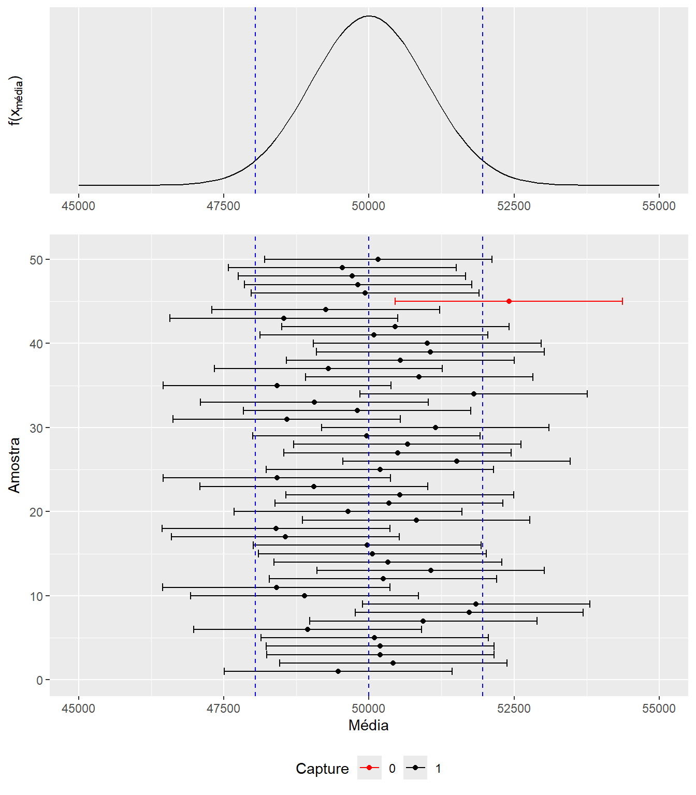
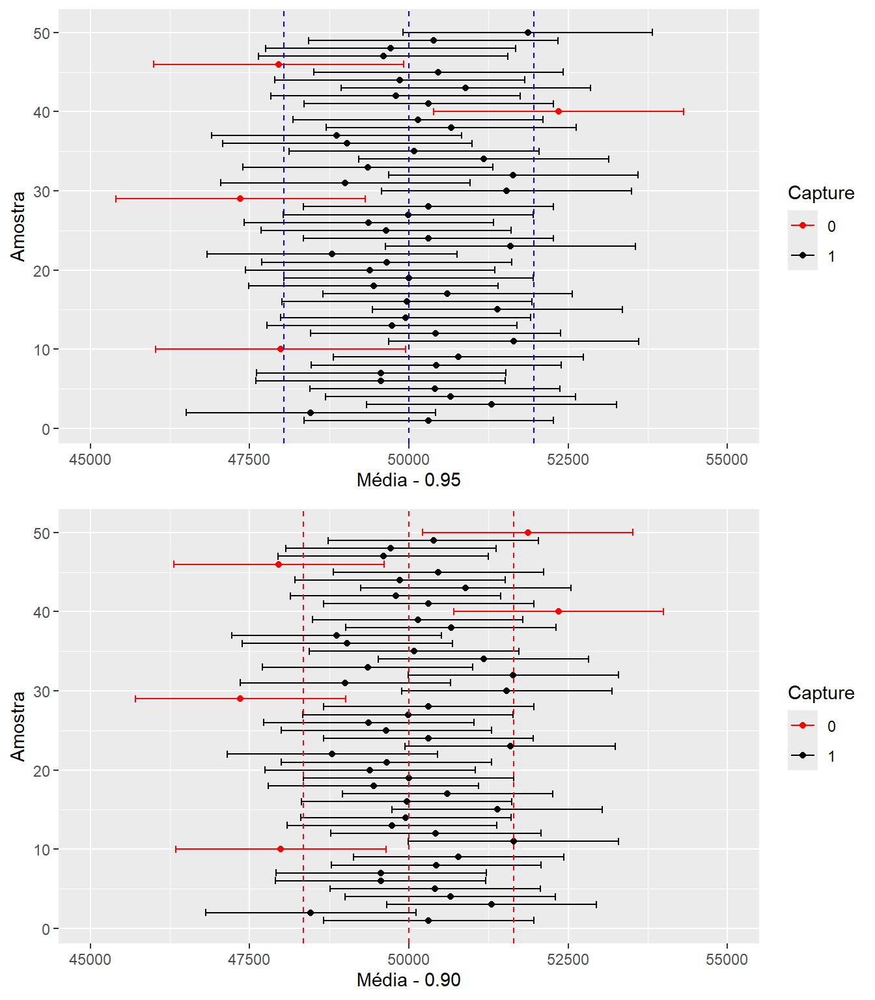

Até agora encontramos estatística ou estimadores que geram boas estatimativas de características da função de distribuição populacional, ou seja dos parâmetros. Dessa forma, encontramos estimadores \(T\) de \(\theta\) que são não viesados, eficiêntes e consistêntes.
Entretanto, nunca temos certeza que a estatística é igual ao parâmetro populacional, se precisamos de um valor esse é o que devemos escolher. Este é um valor sacado da distribuição do estimador. Nos exemplos anteriores observamos que ao mudar a amostra mudamos o valor da estimativa. Cada novo processo de amostragem, irá gerar um novo valor para nossa estimativa.
Dada essa incerteza de sabermos se nossa estimativa está próxima do verdadeiro parâmetro populacional, gostariamos de poder dizer que “temos uma grande confiança de que o parâmetro populacional está dentro de certo intervalo”. Precisamos definir mais precisamente o que é uma grande confiança e definir a construição do intervalo.
14.2 Intervalo de confiança: Procedimento Geral
De forma geral podemos definir um intervalo em termos de variabilidade ao redor da estimativa. Logo podemos utilizar o desvio padrão do nosso estimador para fazer isso. Assim o procedimento geral será:
\[IC(\theta)=(t-c.\sigma_T; t+c.\sigma_T)\] Aqui temos nossa estimativa \(t\) e somamos e subtraímos \(c.\sigma_T\), sendo \(c\) um número real podendo ser 2 ou 3, entre outros. A intuição desse princípio é similar ao que estudamos com relação a distribuição normal, que a quantidade de informação que está entre 1 desvio padrão abaixo e acima é de 68,26%, entre 2 desvios 95,44% e entre 3 desvios 99,73%.
Uma definição geral pode ser assim feita:
NoteDEFINIÇÃO
Intervalo de Confiança:
Seja a amostra aleatória de tamanho \(n\) e \(X_1,...,X_n\) as \(n\) medições da variável aleatóri \(X\) e \(x_1,..., x_n\) os valores observados. Sendo \(\theta\) o parâmetro de interesse e \(\gamma\) um número entre 0 e 1. Se existirem duas estatística amostrais \(L_n=g(X_1,...,X_n)\) e \(U_n=h(X_1,...,X_n)\), tal que:
\[P(L_n<\theta<U_n)=\gamma\]
Então,
\[l_n=g(x_1,...,_n),u_n=h(x_1,...,x_n)\] é chamado de intervalo de confiança para \(\theta\) com \(\gamma\)% de nível de confiança.
Podemos definir \(l_n\) e \(u_n\) de forma similar ao que fizemos no início da seção em termos de desvio padrão. Vamos ver o caso da média quando temos variância conhecida e desconhecida.
14.2.1 Para dados com Distribuição Normal: a média
Partimos aqui da distribuição de \(\bar{X}\) que como já vimos possui uma distribuição normal, \(N(\mu,\sigma_{\bar{X}}^2)\) ou \(N(\mu,\frac{\sigma^2}{n})\). Assumindo aqui que conhecemos \(\sigma^2\) e que encontramos com facilidade os valores críticos da distribuição normal padrão, \(z_c\). Temos que:
\[Z_{\bar{X}}=\frac{\bar{X}-\mu}{\sigma_{\bar{X}}}\] tem distribuição normal padrão \(N(0,1)\). Dessa forma podemos definir:
\[P(-z_c<Z_{\bar{X}}<z_c)=\gamma\] ou \[P(|Z_{\bar{X}}|<z_c)=\gamma\]. Se \(\gamma\) for, por exemplo, 95% teremos a seguinte situação apresentada na figura 1,
Intervalo de confiança para Normal com nível de confiança de 0.95
Assim, temos no exemplo \(\gamma=0.95\) e \(\alpha=1-\gamma\). Como visto, data a simetria da distribuição dividimos \(\alpha\) igualmente entre as duas caldas da distribuição, ou seja, \(\frac{\alpha}{2}=0.025\). De uma maneira genérica podemos proceder da seguinte maneira:
Assim, a probabilidade da esperança populacional \(\mu\) estar entre o intervalo \(\bar{X} \pm z_c\sigma_{\bar{X}}\) é igual \(\gamma\).
Sabendo que \(\sigma_{\bar{X}}=\frac{\sigma}{\sqrt{n}}\), que dividiremos o nível de confiança nas duas caldas da distribuição, \(z_{\frac{\alpha}{2}}\) podemos definir \(L_n\) e \(U_n\) para os diversos níveis de confiança como:
Dessa forma, pode-se achar a estimativa do intervalo de confiança para o parâmetro \(\mu\) com nível de confiança de \(\gamma\), ou \(1-\alpha\), da seguinte maneira:
\[IC(\mu;\gamma)=\bigg( \bar{x}-z_{\frac{\alpha}{2}}\frac{\sigma}{\sqrt{n}};\bar{x}+z_{\frac{\alpha}{2}}\frac{\sigma}{\sqrt{n}}\bigg)\] Para o exemplo com \(\gamma=95\)% e portanto, \(\alpha=0.05\), tem-se que \(z_{0.025}=1.96\) e o seguinte intervalo para 95% de confiança:
A interpretação do intervalo de confiança é que se fizessemos 100 intervalos de confiança, 95% deles conteriam o verdadeiro parâmetro populacional. Ou seja, a propabilidade da esperança populacional estar no intervalo descrito acima é de 0.95 A figura abaixo retirada de Bussab e Morettin, representa o que estamos fazendo:
Figure 14.1: Intervalo de Confiança para a Esperança
Para construir a estimativa do intervalo utilizamos a estatística calculada e abrimos um intervalo a direita, que chamamos de \(U_n=\bar{x}-z_{\frac{\alpha}{2}}\frac{\sigma}{\sqrt{n}}\) e outro a esquerda que chamamos \(L_n=\bar{x}+z_{\frac{\alpha}{2}}\frac{\sigma}{\sqrt{n}}\). No exemplo, perceba que utilizamos praticamente dois desvios da média para cima e para baixo do valor calculado (\(\alpha=0.05\)). Com isso esperamos que a maior parte dos dados estejam dentro desse intervalo, e principalmente que a confiança nos indique quantos intervalos conterão o verdadeiro parâmetro populacional, o qual está no centro da distribuição da média.
Para solidificar essa ideia, simulamos abaixo a distribuição da estatística \(f(\bar{X})\), que veio de um processo de amostragem aleatória de \(X\), ou seja, \(X_1,...,X_n\). Considerando Leis dos Grandes Números e Teorema do Limite Central sabemos que \(\bar{X}\sim N(\mu,\frac{\sigma^2}{n})\) Especificamente sabemos aqui que \(\bar{X}\sim N(50.000,1.000^2)\).
Foram feitas 50 repetições do processo de amostragem (foi retirado 50 valores de forma aleatória da distribuição da média) e calculado para cada um o intervalo de confiança, conforme visto acima, \(U_n\) e \(L_n\).A parte superior da figura apresenta a distribuição da média \(f(\bar{X})\) e a parte inferior mostra os 50 intervalos de confiança. Vejamos a simulação abaixo feita no R e baseadas em Grosse, P.1.
#Simulando um conjunto de 50 médias que vem de uma normal com #Esperança igual a 50.000. Logo distribuição da média será# Assumimos 1000 como o desvio padrão da médialibrary(dplyr)library(magrittr)library(ggplot2)library(ggpubr)meanset <-rnorm(50,50000,1000)meanset <-as.data.frame(meanset)colnames(meanset) <-"Mean"##Calculando as bandas superiorees e inferiores L e U - #zc*DP(média) = 1960meanset95 <- meanset %>%mutate(u = Mean +1960) %>%mutate(l = Mean -1960)Sample <-seq(1,50,1)Sample <-as.data.frame(Sample)ci95 <-cbind(Sample, meanset95)# Determinando se um intervalo captura o verdadeiro valorci95 <- ci95 %>%mutate(Capture =ifelse(l <50000,ifelse(u >50000, 1, 0), 0))ci95$Capture <-factor(ci95$Capture, levels =c(0,1))# Gerando o Gráfico dos diversos Intervalos# Distribuição da médiacolorset =c('0'='red','1'='black')ci_plot_95 <- ci95 %>%ggplot(aes(x = Sample, y = Mean)) +geom_point(aes(color = Capture)) +geom_errorbar(aes(ymin = l, ymax = u, color = Capture)) +scale_color_manual(values = colorset) +coord_flip() +geom_hline(yintercept =50000, linetype ="dashed", color ="blue")+geom_hline(yintercept =51960, linetype ="dashed", color ="blue")+geom_hline(yintercept =48040, linetype ="dashed", color ="blue")+labs(title = ) +theme(plot.title =element_text(hjust =0.5)) +ylim(45000,55000)+theme(legend.position="bottom")+labs(y ="Média", x="Amostra") dist_med <-ggplot(data =data.frame(x =c(45000, 55000)), aes(x)) +stat_function(fun = dnorm, n =101, args =list(mean =50000, sd =1000)) +ylab("") +scale_y_continuous(breaks =NULL)+geom_vline(xintercept =51960, linetype ="dashed", color ="blue")+geom_vline(xintercept =48040, linetype ="dashed", color ="blue")+labs(y =expression(paste("f(", "x"[média], ")")), x=element_blank())ggarrange(dist_med, ci_plot_95, heights =c(2, 5),ncol =1, nrow =2, align ="v")

50 Intervalos de confiança de 0.95
As linhas em azul representam o intervalo do nível de confiança, ou seja, \(\gamma=0.95\) para a distribuição da média. As barras em preto são intervalos que contêm a verdadeira média e os intervalos em vermelho são aqueles que não contêm a verdadeira média. Perceba que em poucos casos isso ocorre, apenas para os casos onde a estimativa pontual da média sai fora da linha azul. Isso acontece em apenas 5% das vezes, afinal garantimos isso quanto escolhemos o \(z_c\) para o nível de confiança desejado.
Dessa forma, observe que para níveis de confiança menores, a linha azul estará mais próximo a média e portanto mais valores de intervalos não conterão o parâmetro populacional, pois agora utilizamos um \(z_c\) mais próximo da média, o qual produzirá intervalos de amplitudes menores. Com isso, encontraremos mais intervalos que não contêm o parâmetro populacional. Vejamos o gráfico abaixo:

Comparando Intervalos de confiança de 0.90 e 0.95
A linha azul representa o intervalo para 0.95 de confiança e a linha vermelha o intervalo para 0.90 de confiança, esses representam a amplitude do intervalo aplicados para \(\bar{X}=\mu\) pra cada nível de confiança. Essa amplitude é replicadanas demais estimativas. Observe que temos barras de amplitude menores no gráfico inferior (0.90) e isso implica que temos uma quantidade maior de intervalos que não contêm o parâmetro populacional (em vermelho). Logo, a chance de você construir um intervalo e esse não conter o verdadeiro parâmetro é maior para níveis menores de confiança.
Vejamos agora uma aplicação desse resultado.
TipEXEMPLO
Temos uma máquina de empacotar café. Normalmente com \(\mu=500\) e \(\sigma^2=100\). A máquina desregulou e queremos saber qual a nova média \(\mu\).
Temos uma amostra: \(n=25\); \(\overline{X}=485\)
Queremos estimar \(\mu\) com \(\gamma=0,95\). Isso representa o seguinte intervalo de confiança:
Entretanto, não possuimos mais os valores de \(\sigma\) e a formulação não nos ajuda mais. Uma alternativa é trocar \(\sigma\) pelo seu estimador \(S_n\). Assim teriamos a segiunte formulação:
Para um amostra suficientemente grande podemos aproximar a distribuição t-student por uma normal padrão e assim calculamos o intervalo de confiança com base na normal mesmo sendo utilizado o estimador da variância.